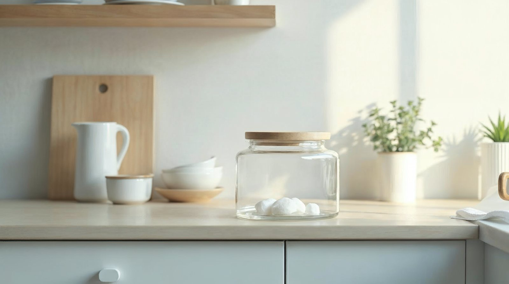
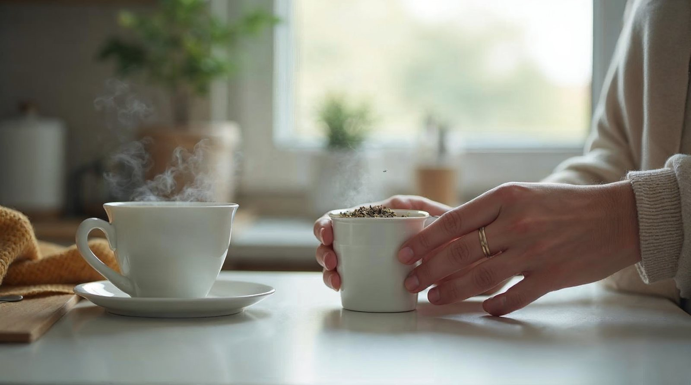
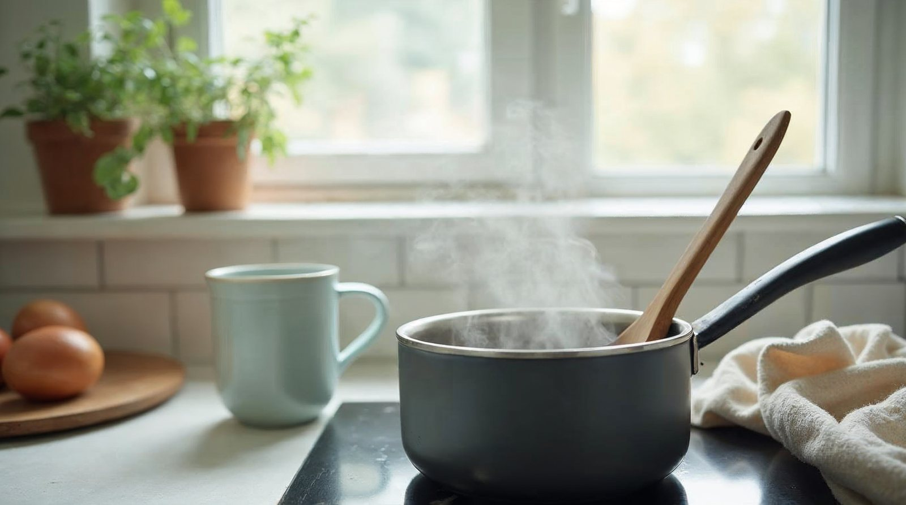
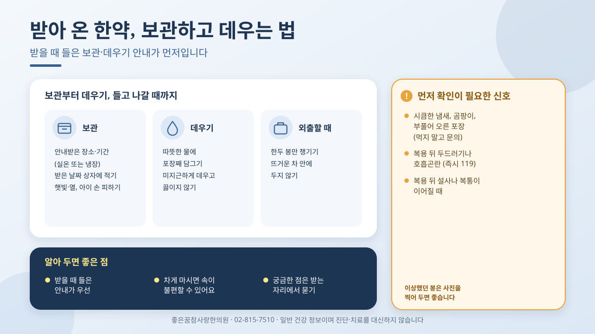

이종호 한의사 감수좋은꿈참사랑한의원 대표원장 (한의사 면허번호 19769)발행 2026-11-23 · 수정 2026-11-26
이 글의 차례
- 왜 보관 방법이 중요할까요
- 데울 때는 구체적으로 어떻게 하나요?
- 이 정도는 괜찮고, 이럴 때는 드시지 마세요
- 왜 아침에 꺼내는 시간까지 정해 두면 좋을까요
- 집에 아이가 있다면 이렇게 챙겨 주세요
- 남은 한약이 생겼을 때는요?
- 자주 하는 오해
- 예를 들면 이런 경우입니다
- 실온 보관과 냉장 보관은 어떻게 나뉘나요?
- 직장이나 학교에서 드실 때는요?
- 먼저 이렇게 여쭙니다
- 일상에서 먼저 해 볼 수 있는 것
- 한의원에서 함께 살필 수 있는 경우
- 왜 끓이면 안 된다고 할까요
- 이사나 장거리 이동 중에는 어떻게 하나요?
- 보관이 어려워 복용을 미루게 된다면요?
- 스스로 점검해 보세요
- 계절과 외출에 따라 이렇게 챙겨 보세요
- 왜 받은 날짜를 적어 두라고 할까요
- 다 드신 뒤 빈 봉은 어떻게 하나요?
- 예를 들면 이런 경우도 있습니다
- 이렇게 기록해 오시면 상담이 쉬워집니다
- 이런 증상은 먼저 확인이 필요합니다
- 보관과 데우기에서 꼭 기억할 세 가지
- 함께 읽으면 좋은 글
받아 온 한약은 안내받은 보관 장소(실온 또는 냉장)와 기간을 지키고, 데울 때는 따뜻한 물에 포장째 담가 미지근하게 데우는 방법이 흔히 쓰입니다. 다만 포장 재질과 처방에 따라 가능한 방법이 다를 수 있어 받을 때 들은 안내가 우선입니다. 시큼한 냄새나 부푼 포장이 보이면 드시지 말고 먼저 문의해 주세요.
왜 보관 방법이 중요할까요
- 한약은 보존료 없이 달이는 경우가 많아 온도와 기간에 따라 상태가 달라질 수 있습니다.
- 직사광선이나 열이 닿는 곳에 두면 변질이 빨라질 수 있습니다.
- 끓이거나 지나치게 가열하면 포장이 손상되거나 성분이 달라질 수 있습니다.
- 차갑게 마시면 속이 예민한 분은 불편을 느낄 수 있습니다.
데울 때는 구체적으로 어떻게 하나요?
가장 흔히 쓰는 방법은 그릇에 따뜻한 물을 받아 한약 봉을 포장째 담가 두는 것입니다. 손을 넣었을 때 뜨겁다 싶은 정도의 물이면 충분하고, 몇 분 지나 봉을 만져 보아 미지근하게 데워졌으면 꺼내시면 됩니다.
끓는 물에 바로 넣거나 냄비에 봉째 끓이면 포장이 약해지거나 터질 수 있습니다. 급하게 데워야 한다면 봉을 뜯어 전자레인지에 쓸 수 있는 컵에 옮겨 짧게 데우는 방법도 있지만, 포장과 처방에 따라 안내가 다를 수 있어 받을 때 들은 방법을 먼저 따라 주세요.
- 물 온도: 손을 담그기 조금 뜨거운 정도
- 데운 정도: 마셨을 때 미지근하거나 따뜻한 정도
- 피할 것: 끓는 물, 직화, 포장째 전자레인지
- 데운 뒤: 다시 식혔다 데우기를 반복하지 말고 그 자리에서 드시기
이 정도는 괜찮고, 이럴 때는 드시지 마세요
한약은 달인 뒤 시간이 지나면서 바닥에 앙금이 가라앉는 경우가 있습니다. 약재 성분이 가라앉은 것일 수 있어, 가볍게 흔들어 드시도록 안내하는 경우가 많습니다. 봉마다 색이 조금씩 진하거나 옅어 보이는 것도 흔히 있는 일입니다.
반면 아래와 같은 모습이 보이면 그 봉은 드시지 말고 사진을 찍어 문의해 주세요.
- 봉이 빵빵하게 부풀어 있다
- 뜯었을 때 시큼하거나 쉰 냄새가 난다
- 거품이 계속 올라오거나 표면에 막 같은 것이 떠 있다
- 맛이 평소와 확연히 다르다
왜 아침에 꺼내는 시간까지 정해 두면 좋을까요
바쁜 아침에는 데우는 몇 분도 부담이 됩니다. 그래서 꾸준히 드시는 분들을 보면 저마다 동선을 정해 두는 경우가 많습니다. 전날 밤 한 봉을 냉장고 문 쪽에 옮겨 두거나, 세수하기 전에 물에 담가 두고 준비를 마친 뒤 마시는 식입니다.
복용을 자주 잊는 분은 한약 상자를 눈에 잘 띄는 곳에 두되, 직사광선과 열이 닿지 않는 자리를 고르세요. 상자에 받은 날짜를 적어 두면 남은 양도 한눈에 보입니다.
집에 아이가 있다면 이렇게 챙겨 주세요
한약 봉은 음료처럼 보여 아이가 호기심에 뜯을 수 있습니다. 냉장고 아래 칸보다는 손이 잘 닿지 않는 위 칸에 두시고, 실온 보관이라면 높은 수납장을 이용해 주세요.
가족 여러 명이 한약을 함께 드신다면 봉마다 이름이 헷갈리지 않도록 상자를 따로 두거나 이름을 적어 두세요. 서로 다른 처방이 섞이면 누가 무엇을 먹었는지 알기 어려워집니다.
남은 한약이 생겼을 때는요?
복용을 쉬었거나 일정이 바뀌어 한약이 남았다면, 남은 봉수와 받은 날짜를 알려 주세요. 이어서 드셔도 되는지, 보관 기간 안인지 함께 확인합니다. 오래된 봉을 임의로 이어 드시기보다 먼저 여쭤 주시는 편이 안전합니다.
자주 하는 오해
- 냉장고에 넣어 두면 기간과 상관없이 오래 두어도 된다고 여기기 쉽지만, 냉장 보관이라도 안내받은 기간을 지키는 편이 안전합니다.
- 전자레인지에 포장째 돌리면 빠르다고 생각하기 쉽지만, 포장 재질에 따라 터지거나 손상될 수 있어 받을 때 들은 방법을 따릅니다.
- 뜨거울수록 좋다고 여겨 팔팔 끓이는 분이 있지만, 마시기 편한 따뜻한 정도면 충분합니다.
- 조금 시큼해도 한약 맛이려니 하고 넘기기 쉽지만, 평소와 다른 냄새나 맛이 나면 드시지 말고 먼저 문의해 주세요.

예를 들면 이런 경우입니다
- 예를 들어 아침 출근이 바쁜 직장인이라면, 전날 밤 한 봉을 냉장고 앞쪽에 꺼내 두고 아침에 따뜻한 물에 담가 두었다가 드시는 식으로 동선을 함께 정합니다.
- 예를 들어 독서실에서 하루를 보내는 수험생이라면, 한 봉만 챙겨 가방 안쪽에 두고 직사광선이 드는 창가는 피하도록 안내합니다.
- 예를 들어 손주를 돌보는 어르신이라면, 아이 손이 닿지 않는 곳에 두고 받은 날짜를 상자에 크게 적어 두시도록 함께 정합니다.
실온 보관과 냉장 보관은 어떻게 나뉘나요?
어디에 둘지는 처방과 포장 방법, 받는 계절에 따라 달라 받을 때 안내해 드립니다. 실온 보관을 안내받았다면 햇빛이 들지 않고 서늘한 곳, 예를 들어 주방 가스레인지나 밥솥 옆이 아닌 수납장 안쪽을 고르세요.
냉장 보관을 안내받았다면 냉장고 문 쪽보다는 온도가 덜 바뀌는 안쪽 칸이 좋습니다. 김치나 반찬처럼 냄새가 강한 음식 바로 옆은 피하고, 냉동실에는 따로 안내받은 경우에만 넣어 주세요.
직장이나 학교에서 드실 때는요?
낮 시간에 밖에서 드셔야 한다면 그날 먹을 한 봉만 챙겨 가세요. 사무실에 냉장고가 있다면 넣어 두셨다가, 드시기 전 따뜻한 물이 담긴 컵에 잠시 담가 두시면 됩니다.
냉장고가 없는 곳이라면 가방 안쪽 그늘진 곳에 두고, 햇볕이 드는 책상 위나 난방기 옆은 피해 주세요. 데울 곳이 마땅치 않으면 실온 그대로 드셔도 되는지 받으실 때 미리 여쭤 두시면 편합니다.
먼저 이렇게 여쭙니다
- 집에 보관할 공간(냉장고 여유)이 있나요?
- 출장이나 여행 일정이 있나요?
- 차가운 음식을 먹으면 속이 불편한 편인가요?
- 이전 한약을 보관하다가 상태가 변한 적이 있나요?
- 하루 중 한약을 드시기 편한 시간과 장소는 어디인가요?
- 집에 아이나 반려동물이 있어 따로 둘 곳이 필요한가요?

일상에서 먼저 해 볼 수 있는 것
- 받은 날짜를 상자에 적어 두고 안내받은 기간 안에 먹기
- 직사광선과 열이 닿지 않는 곳, 아이 손이 닿지 않는 곳에 두기
- 데울 때는 따뜻한 물에 포장째 담그고 끓이지 않기
- 외출할 때는 한두 봉만 챙기고 뜨거운 차 안에 두지 않기
한의원에서 함께 살필 수 있는 경우
- 보관 공간이 마땅치 않을 때 휴대 방법과 보관 방법을 함께 정합니다.
- 차게 마시면 속이 불편한 분은 데우는 방법을 함께 안내합니다.
- 여행이나 출장이 있을 때 복용 일정을 함께 조정합니다.
좋은꿈참사랑한의원의 한약은 진단과 상담을 거친 뒤 처방합니다. 보관이나 데우는 방법이 궁금하시면 받으시는 그 자리에서 편하게 물어보셔도 됩니다.
한약 상담의 흐름은 대개 이렇습니다. 먼저 불편한 점과 복용 중인 약, 생활 일정을 여쭙는 문진을 하고, 모든 분께 진맥을 짚습니다. 필요하다고 판단되면 원내 혈액 검사기나 인바디 770으로 몸 상태를 함께 확인하고, 잠과 식사, 배변 같은 생활 기록을 같이 봅니다.
그런 뒤 한약이 필요한지와 처방 방향을 설명드리고, 받으실 때 보관 장소와 기간, 데우는 방법, 외출할 때 챙기는 방법까지 안내합니다.
왜 끓이면 안 된다고 할까요
한약은 이미 원내에서 달여 나온 상태라, 집에서 다시 끓일 필요는 없습니다. 오히려 다시 끓이면 수분이 날아가 맛이 진해지고, 포장째 끓이면 비닐이 약해지거나 터질 수 있습니다.
드시기 편한 온도로 데우는 것이 목적이라는 점만 기억해 주시면 됩니다. 손으로 봉을 쥐었을 때 따뜻하다고 느껴지면 충분합니다.
이사나 장거리 이동 중에는 어떻게 하나요?
이사처럼 며칠 동안 냉장고를 쓰기 어려운 일정이 있다면 한약을 받으시기 전에 말씀해 주세요. 받는 날짜를 조정하거나 그 기간의 복용을 어떻게 할지 함께 정합니다.
비행기나 기차로 이동하실 때는 그날 드실 만큼만 들고 타시고, 나머지는 보냉 가방에 담아 짐칸에 두세요. 긴 이동 뒤에는 봉이 부풀거나 새지 않았는지 한 번 확인한 뒤 보관해 주세요.
보관이 어려워 복용을 미루게 된다면요?
냉장고가 늘 꽉 차 있거나, 가족과 함께 쓰는 공간이라 둘 곳이 마땅치 않아 복용을 미루는 분도 계십니다. 그런 사정이 있다면 부끄러워하지 말고 말씀해 주세요. 한 번에 받는 양을 줄이거나 보관 방법을 생활에 맞게 다시 정할 수 있습니다.
스스로 점검해 보세요
- 한약 상자에 받은 날짜를 적어 두었다
- 안내받은 보관 장소(실온 또는 냉장)를 기억한다
- 냉장고에 한약을 둘 자리가 있다
- 데울 때 끓는 물이나 전자레인지를 쓰지 않는다
- 외출할 때 한두 봉만 챙기고 차 안에 두지 않는다
- 차갑게 마시면 속이 불편한 편이다
- 평소와 다른 냄새나 부푼 봉을 본 적이 있다
마지막 항목에 해당하면 그 봉은 드시지 말고 사진을 찍어 문의해 주세요. 나머지는 다음 진료 때 말씀해 주시면 보관 방법을 다시 맞춥니다.

계절과 외출에 따라 이렇게 챙겨 보세요
- 여름에는 실내 온도가 높아지기 쉬워 실온 보관 안내를 받았더라도 서늘한 곳을 고르고, 외출할 때는 보냉 가방에 한 봉만 넣어 가세요.
- 한여름 차 안이나 햇볕 드는 창가는 짧은 시간에도 뜨거워질 수 있어 두지 않는 편이 안전합니다.
- 겨울에는 밖에서 차가워진 한약을 그대로 마시기보다 따뜻한 물에 잠시 담가 두었다가 드시면 속이 편할 수 있습니다.
- 여행이나 출장으로 며칠 집을 비운다면 남은 양과 일정을 미리 알려 주세요. 챙겨 갈 양과 보관 방법을 함께 정합니다.
- 바빠서 며칠 거른 봉이 쌓였다면 한꺼번에 몰아서 드시지 말고, 남은 양과 받은 날짜를 알려 주시면 이어서 드실지 함께 확인합니다.
왜 받은 날짜를 적어 두라고 할까요
한약은 받은 날로부터 기간을 세어 보관하는 경우가 많습니다. 상자에 날짜를 적어 두지 않으면, 바쁜 일상 속에서 언제 받았는지 금방 헷갈립니다.
받은 날짜와 함께 "냉장" 또는 "실온"이라고 보관 장소를 크게 적어 두시면, 가족이 대신 챙겨 줄 때도 헷갈리지 않습니다. 이전에 받은 한약이 남아 있는데 새 한약을 받았다면, 서로 섞이지 않도록 상자를 따로 두고 이전 것은 먼저 여쭤 보신 뒤 정리해 주세요.
다 드신 뒤 빈 봉은 어떻게 하나요?
빈 봉은 가볍게 헹궈 지역의 분리배출 안내에 따라 버리시면 됩니다. 마지막 몇 봉이 남았을 때 다음 진료 날짜를 잡아 두시면, 복용이 끊기지 않고 몸 상태를 이어서 살필 수 있습니다.
다음 진료 때는 보관하면서 불편했던 점이나 데우는 과정에서 번거로웠던 점도 말씀해 주세요. 작은 불편이라도 알려 주시면 다음 한약을 받으실 때 방법을 더 편하게 맞출 수 있습니다.
예를 들면 이런 경우도 있습니다
- 예를 들어 맞벌이 부부가 함께 한약을 드신다면, 상자에 이름을 적고 냉장고 칸을 나눠 두면 서로 바뀌는 일을 줄일 수 있습니다.
- 예를 들어 기숙사에 사는 학생이라면, 공용 냉장고 대신 방에서 서늘한 곳에 둘 수 있는지 받으실 때 미리 여쭤 보세요.
이렇게 기록해 오시면 상담이 쉬워집니다
- 한약을 받은 날과 남은 양
- 보관한 장소와 온도
- 데워 먹었는지, 차갑게 먹었는지와 그때의 속 느낌
- 잊고 거른 봉이 있다면 그 날짜와 이유
- 상태가 이상했던 봉이 있다면 사진
보관하던 한약 가운데 한 봉만 상태가 이상하다면, 같은 상자의 다른 봉도 함께 살펴봐 주세요. 이상한 봉이 여러 개라면 남은 봉수와 받은 날짜, 보관한 장소를 알려 주시면 원인을 함께 짚어 봅니다. 상자를 열어 두거나 냉장고 문을 자주 여닫는 자리에 두셨다면 그 점도 말씀해 주세요. 다음 한약부터 보관 자리를 함께 다시 정합니다.
이런 증상은 먼저 확인이 필요합니다
- 상한 듯한 한약을 먹은 뒤 구토나 설사가 심하게 이어지는 경우
- 복용 뒤 두드러기가 번지거나 숨쉬기 어려운 경우
이런 신호가 있으면 한의원보다 가까운 병원이나 응급실을 먼저 찾으세요.
보관과 데우기에서 꼭 기억할 세 가지
- 받은 날짜와 보관 장소를 상자에 적어 두기
- 끓이지 말고 따뜻한 물에 담가 미지근하게 데우기
- 냄새나 모양이 평소와 다르면 드시지 말고 사진과 함께 문의하기
이 세 가지만 지켜도 대부분의 보관 걱정은 줄어듭니다. 그 밖에 생활 속에서 생기는 궁금한 점은 받으실 때나 전화로 편하게 물어봐 주세요. 집집마다 사정이 달라, 그 집에 맞는 방법을 함께 찾는 것이 가장 현실적이라고 생각합니다.
함께 읽으면 좋은 글
- 파우치 한약은 어떻게 데워 먹으면 좋을까요?
- 한약 파우치는 어떻게 보관하고, 여행 갈 때는 어떻게 챙기나요?
- 원내 탕전은 무엇이고 한약은 어떤 과정으로 만들어지나요?

여쭙는 것
- 집에 보관할 공간(냉장고 여유)이 있나요?
- 출장이나 여행 일정이 있나요?
- 차가운 음식을 먹으면 속이 불편한 편인가요?
생활에서 해 볼 것
- 받은 날짜를 상자에 적어 두고 안내받은 기간 안에 먹기
- 직사광선과 열이 닿지 않는 곳, 아이 손이 닿지 않는 곳에 두기
- 데울 때는 따뜻한 물에 포장째 담그고 끓이지 않기
한의원에서 함께 살필 것
- 보관 공간이 마땅치 않을 때 휴대 방법과 보관 방법을 함께 정합니다.
- 차게 마시면 속이 불편한 분은 데우는 방법을 함께 안내합니다.
- 여행이나 출장이 있을 때 복용 일정을 함께 조정합니다.
먼저 확인이 필요한 신호
- 상한 듯한 한약을 먹은 뒤 구토나 설사가 심하게 이어지는 경우
- 복용 뒤 두드러기가 번지거나 숨쉬기 어려운 경우
한눈에 보는 표
| 구분 | 핵심 |
|---|---|
| 여쭙는 것 | 집에 보관할 공간(냉장고 여유)이 있나요? 출장이나 여행 일정이 있나요? |
| 생활에서 해 볼 것 | 받은 날짜를 상자에 적어 두고 안내받은 기간 안에 먹기 직사광선과 열이 닿지 않는 곳, 아이 손이 닿지 않는 곳에 두기 |
| 한의원에서 함께 살필 것 | 보관 공간이 마땅치 않을 때 휴대 방법과 보관 방법을 함께 정합니다. 차게 마시면 속이 불편한 분은 데우는 방법을 함께 안내합니다. |
| 먼저 확인이 필요한 신호 | 상한 듯한 한약을 먹은 뒤 구토나 설사가 심하게 이어지는 경우 복용 뒤 두드러기가 번지거나 숨쉬기 어려운 경우 |
자주 묻는 질문
냉장 보관 중인 한약을 바로 마셔도 되나요?
차갑게 마시면 속이 불편할 수 있어 안내받은 방법으로 데워서 마시길 권합니다.
며칠까지 두고 먹을 수 있나요?
처방과 포장에 따라 달라 받을 때 안내받은 기간을 지켜 주세요.
먹다 남은 것은 다시 보관해도 되나요?
안내받은 방법을 우선하며 헷갈리면 한의원에 문의하세요.
냉동실에 넣어 두어도 되나요?
처방과 포장에 따라 다릅니다. 오래 두어야 할 사정이 있다면 받으실 때 말씀해 주시면 보관 방법을 함께 정합니다.
좋은꿈참사랑한의원은 재진 때 지난번 이야기부터 이어서 여쭙니다. 진료시간과 예약은 오시는 길에서 확인하세요.
어디서 상담받을 수 있나요?
좋은꿈참사랑한의원은 서울 동작구 만양로2길 2 신성빌딩 3층·5층(서울 동작구 상도동, 7호선 상도역 3번 출구 근처)에 있습니다. 한의사 3명(이종호 대표원장, 조영기 수석진료원장, 정원영 진료원장)이 진료합니다. 진료시간은 평일 09:30~20:00(점심 13:00~14:00), 토·일·공휴일 09:30~15:00이며, 방문 전 전화로 확인을 권합니다. 예약은 네이버 예약, 카카오톡 상담, 전화 02-815-7510로 받습니다.
이 글은 일반적인 건강 정보이며 개인의 진단이나 치료를 대신하지 않습니다. 증상이 있거나 복용 중인 약이 있다면 진료를 통해 확인하세요. 치료 효과는 개인마다 다를 수 있습니다.
작성 기준: 일반적으로 알려져 있는 건강 정보를 참고해 정리했습니다(대표원장 감수). 증상 기록은 1~2주 동안 하루 1회, 비슷한 시간에 적어 오시면 지난 상태와 비교하기 쉽습니다.